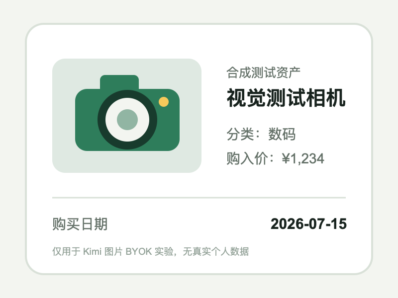
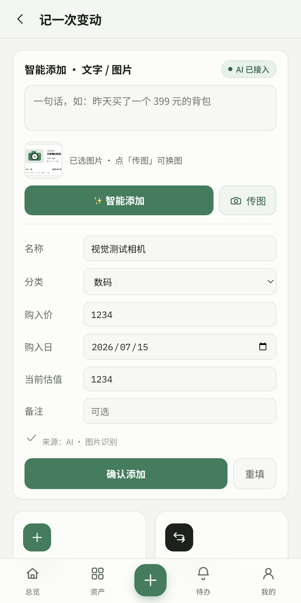

Kimi Image BYOK Live Experiment
图片识别能力通过，产品持久化验收阻塞：Kimi 返回正确结构化结果，但确认保存暴露出智能添加 ID 重启后复用问题。
Verdict
2026-07-15 使用现有 Kimi Coding BYOK token、kimi-for-coding 和不含个人数据的合成 PNG 完成真实图片请求。HTTP 返回 200，App 正确得到“视觉测试相机 / 数码 / ¥1,234 / 2026-07-15 / 当前估值 ¥1,234”。
因此 provider capability validation 已完成；但已有 nl1 的数据档中，新图片资产也被分配为 nl1，详情页显示成功后仍未可靠写入 IndexedDB。该问题是通用智能添加缺陷，不是图片识别失败。
安全边界：实验使用真实数据目录的临时副本和合成图片；原始 App 数据未修改，API key 未打印或写入仓库。
Provider and Request
| Field | Observed Value |
|---|---|
| Provider / Base | Kimi Coding / https://api.kimi.com/coding/v1 |
| Stored model before test | kimi-latest in the original profile; left unchanged |
| Available models | kimi-for-coding, kimi-for-coding-highspeed |
| Tested model | kimi-for-coding, selected only in the temporary profile copy |
| Image payload | PNG as base64 Data URL inside image_url |
| HTTP result | 200 Pass |
| Reported usage | 814 prompt + 286 completion = 1100 tokens |
Evidence


Results
| Check | Result | Evidence |
|---|---|---|
| Existing token authentication | Pass | GET /models returned 200 |
| Image request accepted | Pass | POST /chat/completions returned 200 |
| Structured preview | Pass | Name, category, price, date and value matched |
| Image source label | Pass | UI displayed AI · 图片识别 |
| Immediate confirm/detail | Pass | New asset appeared in the in-memory detail view |
IndexedDB persistence with existing nl1 | Fail | The older record with the same key remained; no persisted camera record |
Persistence Defect
nlSeqstarts at 1 on every launch.- The copied profile already contained
nl1. - Image confirmation created another in-memory
nl1. - Bulk IndexedDB
putwrote both; the later old record won for the duplicate key. - The UI looked successful while IndexedDB contained no
视觉测试相机.
| Location | nl1 Evidence |
|---|---|
| In-memory array | 视觉测试相机 and one pre-existing nl1 record |
| IndexedDB | Only the pre-existing nl1 remained; its user asset name is intentionally omitted |
Acceptance Call
- Mark the Kimi Coding image BYOK live test complete.
- To reproduce it in the real App profile, replace the old
kimi-latestsetting withkimi-for-codingor another model returned by that endpoint. - Do not claim stable or multi-provider image compatibility.
- Fix smart-add ID reuse as P0 before the next release.
- Add a restart regression with a pre-existing
nl1. - Until fixed, use isolated/internal data and export JSON backups.